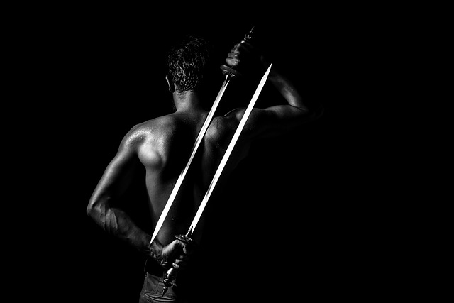
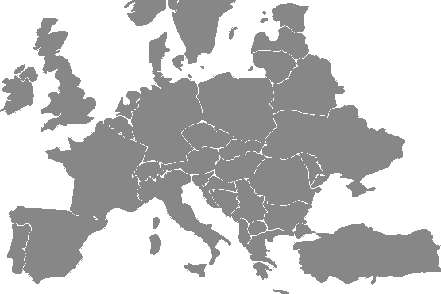

Zawisza the Black
from Garbów of Sulima arms


Interesting Facts
At the beginning Zawisza's name was "Sulimczyk" because his coat of arms had "Sulima" name. He has given his nickname "czarny"(black) not after his armor's color, but after color of his heir and skin.
First historical mention about Zawisza comes from judical acts of 1347. He was noted in that documents as winner of jousting tournament on Wawel hill.
It is important to remember that he was not a knight from the beginning, but only after pass detailed training including the rules of foot and horse fighting, war strategy and, of course, the truths of the Catholic faith, which every knight in Europe had to know at that time, he became a full knight.
His fame as an honorary and just knight was reflected in Polish as the well-known saying: "To rely on Zawisza" which means to trust someone completely.
He was faithful to not one, but two rulers: the king of Hungary - Sigismund of Luxembourg and the king of Poland - Władysław Jagiełło. For this reason, he became a trusted intermediary in their contacts and contributed to the improvement of relations between the two nations.
From his son and granddaughter in the straight line there are eminent figures such as: Bogusław Radziwill (the hero of "The Deluge"), Hetman Stanislaw Koniecpolski, and Henryk "Hubal" Dobrzanski.